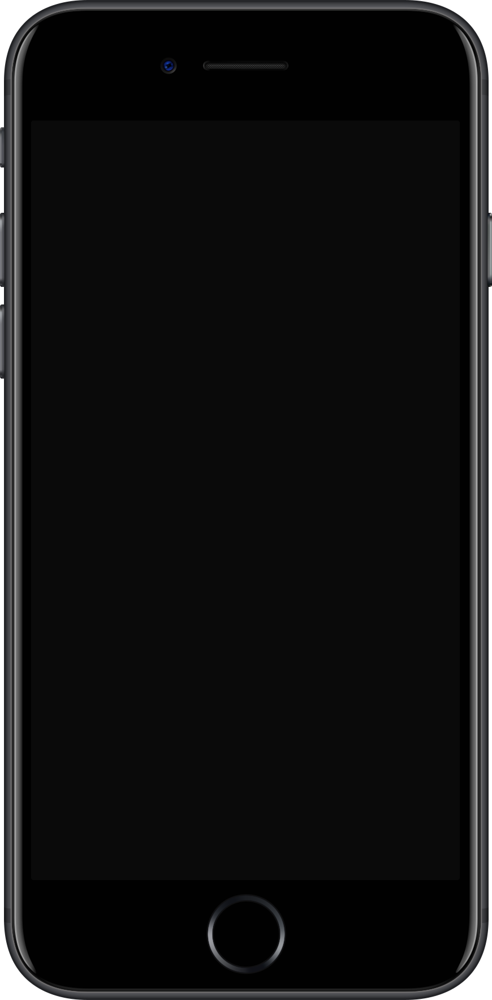
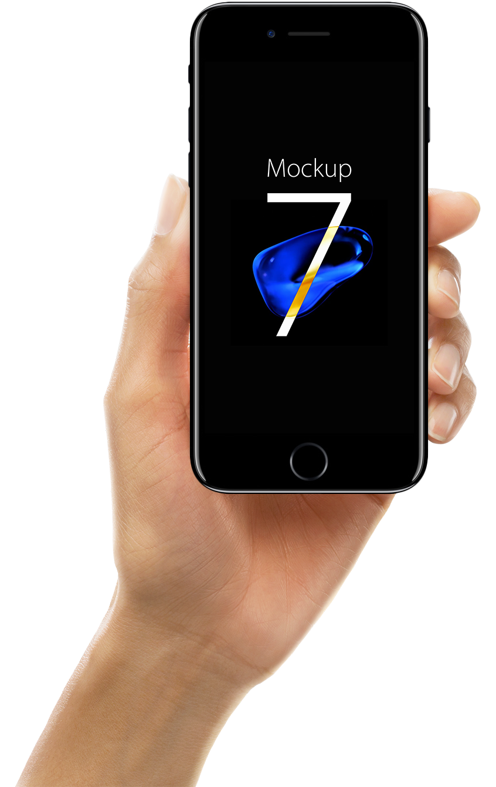
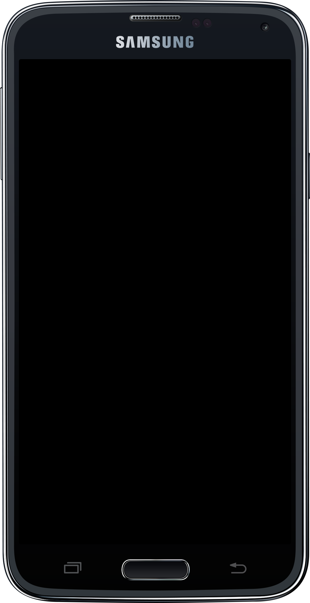
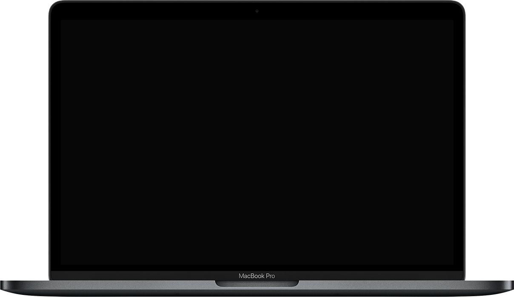
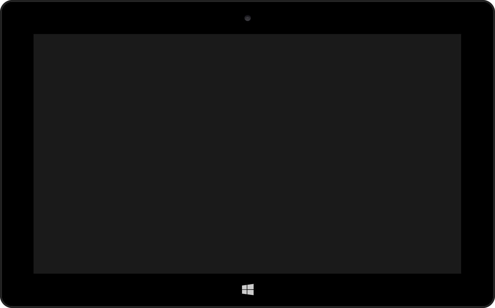
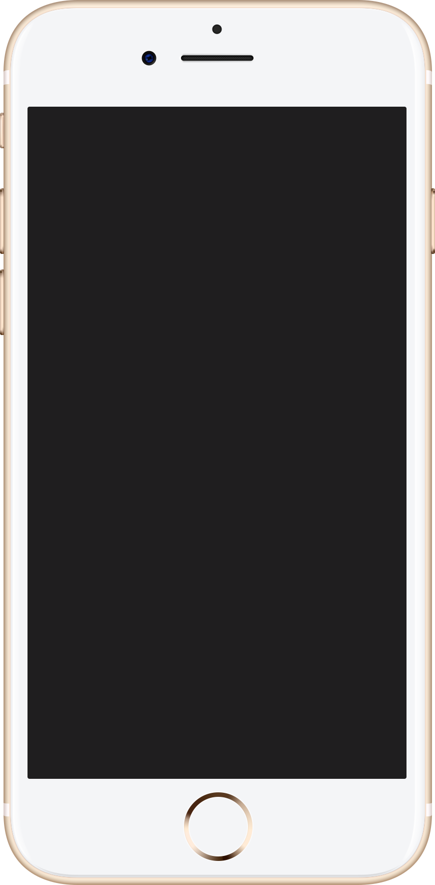
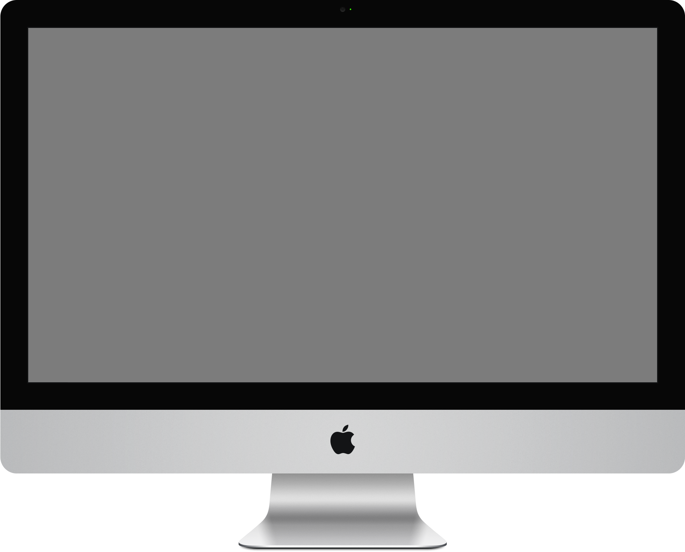

Réparation iPhone
Écran, batterie, caméra, connecteur de charge. Diagnostic gratuit et réparation rapide, du modèle récent au plus ancien.
- Écran et vitre
- Batterie
- Caméra
- Connecteur de charge
Réparation à domicile, Genève et environs
Rapide, professionnel et à domicile.
LUXE Repair répare vos iPhone, Samsung, MacBook, iMac et PC Windows sans que vous ayez à vous déplacer. Nous venons chez vous ou à votre bureau, nous établissons un devis gratuit, puis nous intervenons.
LUXE Repair, anciennement RSG Genève, répare smartphones et ordinateurs à Genève. Même équipe, même atelier, un nom qui a changé.
Nous intervenons à domicile ou au bureau : vous choisissez le lieu et le moment, nous venons avec l'outillage et les pièces. Vous n'avez ni file d'attente ni appareil à laisser plusieurs jours.
Le diagnostic est gratuit et le devis est donné avant toute manipulation. Écran fissuré, batterie qui ne tient plus, connecteur de charge capricieux, SSD à remplacer, machine à nettoyer : nous annonçons le prix, puis nous réparons.
Nous rachetons également les appareils dont vous ne vous servez plus et nous vendons des appareils reconditionnés, testés un par un.

Six prestations, une seule adresse. Toutes réalisées chez vous, au bureau ou en atelier selon la panne.

Écran, batterie, caméra, connecteur de charge. Diagnostic gratuit et réparation rapide, du modèle récent au plus ancien.

Écran, batterie, caméra, connecteur de charge. Diagnostic gratuit et réparation rapide sur toute la gamme Galaxy.

MacBook et iMac : écran, batterie, SSD, nettoyage interne. Machine testée avant d'être rendue.

Portables et fixes : écran, batterie, SSD, nettoyage. Sauvegarde des données avant intervention lorsque c'est possible.

Vous ne vous servez plus d'un appareil : nous l'estimons gratuitement et vous proposons notre meilleure offre.

Appareils reconditionnés, contrôlés et testés avant la mise en vente.
Boutique en ligne bientôt disponible.
Par téléphone, par WhatsApp ou avec le formulaire de cette page. Nous posons quelques questions, puis nous annonçons un devis gratuit.
À domicile ou au bureau, à Genève, au créneau convenu ensemble. Vous n'avez pas à vous déplacer ni à laisser votre appareil.
La pièce est remplacée, l'appareil est testé devant vous et vous repartez avec un matériel en état de marche.
À votre domicile ou sur votre lieu de travail, dans Genève et ses environs.
Le diagnostic et le devis sont offerts, avant toute intervention.
Les pannes courantes sont traitées sur place, sans immobiliser l'appareil.
Le montant annoncé est celui que vous payez, pièces et main d'œuvre comprises.
Outillage adapté, pièces contrôlées, appareil testé avant d'être rendu.
Apple, Samsung et PC Windows : téléphones, portables et ordinateurs fixes.
Déplacez le curseur de chaque planche pour comparer l'appareil reçu et l'appareil rendu.
Devis gratuit, réponse rapide.
Le plus simple reste le téléphone ou WhatsApp : décrivez la panne, nous vous rappelons avec un prix. Le formulaire ouvre votre messagerie avec un message déjà rédigé.